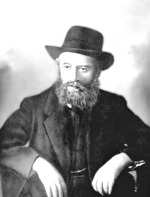

They Will Yearn for the Days of Exile
What did the Rebbe Rashab’s mother know about her son and how did she react to the idea of Tomchei T’mimim? * Who was the person to whom the Rebbe Rashab gave unprecedented honor? * Why did the Rebbe Rashab split wood with an aide and why did this work stop? * Presented for Chaf Cheshvan, the birthd

When the Rebbe Rashab decided to open Yeshivas Tomchei T’mimim, he told his mother, Rebbetzin Rivka, about it. His mother said, “As for food, what will be? What we eat, they will eat; but from where will you get boys who will want to learn in a Chassidishe yeshiva?”
The Rebbe said, “When there is a place where you learn Chassidus, neshamos hear about it and gather on their own.”
GOOD FRUIT
At a farbrengen, the Rebbe Rashab got up and danced with the bachurim. Then he sat down and said, “May it be Hashem’s will that I merit appearing together with them before Moshiach and then I will be able to say: See what I have raised.”
(Toras Shalom)
NO THANKS
At first, the material circumstances of the yeshiva in Lubavitch were not organized fully. Due to this limitation, the hanhala had to turn away many potential students. This was in addition to the restrictions caused by the high spiritual requirements for someone to be accepted into the yeshiva.
Once, a letter arrived from a wealthy person. He offered a large donation but made it conditional on certain things he thought should be implemented (for example that a bell should ring at the end of s’darim).
The Rebbe Rashab responded, “I spurn your silver and gold. This House of G-d will be built without you.”
(Heard from R’ L. Zalmanov. The two preceding stories were often recounted by R’ Pinye Altheus.)
WE MUST THANK G-D
The Rebbe Rashab once stood up and said, “All of us Chabad Chassidim must praise and thank G-d for the privilege of hiskashrus to the [Alter] Rebbe, for through this we are connected to the Ein Sof of Chochma of Atzilus, and with the Rebbe’s niggunim we will go to greet Moshiach Tzidkeinu.”
(Seifer HaSichos 5701)
FROM TEARS TO HOPE
The Rebbe Rayatz described the s’darim in his father’s house:
“The heartfelt vocalization and pleading voice while saying, ‘Pour Your wrath upon the nations who do not know You’ – who do not want to know You – stirred the heart. The words ‘For he consumed Yaakov and destroyed his dwelling’ led to impassioned tears, but then immediately was heard the inwardly fervid proclamation ‘L’shana HaBaa B’Yerushalayim!’”
(Seifer HaSichos 5701)
YEARNING
The Rebbe Rashab:
“When Moshiach will come, speedily in our days amen, all will yearn for the days of galus. Then we will truly feel distress at our having neglected working at avoda; then will we indeed feel the deep pain caused by our lack of avoda. These days of exile are the days of avoda, to prepare ourselves for the coming of Moshiach, speedily in our time, amen.”
(HaYom Yom, 3 Av)
MESIRUS NEFESH AND LOVE
Erev Rosh HaShana 5658/1897, the Rebbe Rashab told his son what his father, the Rebbe Maharash, had told him:
“When the neshama of the Alter Rebbe had to descend below, they told it that in addition to it having a revelation of the Etzem HaNeshama down below, it would also appear as the first leader of Chabad. Through the avoda of mesirus nefesh and the love and kiruv it would have for the Jewish people, the Jews would merit the revelation of Moshiach.”
(Seifer HaSichos 5701)
WHAT THE MOTHER KNOWS OF HER SON
One time, after a farbrengen with the Rebbe Rashab that took place on a happy occasion (Yud-Tes Kislev or Purim), the Chassidim were inebriated. One of them (maybe the mashpia R’ Moshe of Zembin, known as Moshe Zembiner) met Rebbetzin Rivka, the Rebbe’s mother. Being intoxicated, he said, “You don’t know what kind of son you have …”
The Rebbetzin, who was known for her Chassidic cleverness, responded with charming humility, “For me, what I know is enough.”
(Quoted by the mashpia R’ Chaim Shaul Brook)
THE REBBE WROTE HIS PROPHECY
When the Rebbe Rashab founded Yeshivas Toras Emes in Chevron, he sent the mashpia R’ Zalman Havlin and some bachurim shluchim including R’ Alter Simchovitz.
After a short while, R’ Alter longed for the Rebbe and returned to Lubavitch. Later on, R’ Zalman the mashpia also returned to Lubavitch in order to take care of military matters for the bachurim. World War I began while R’ Zalman was in Lubavitch. Consequently, he learned that his family planned on returning to Russia since they had been expelled from Eretz Yisroel by the Turks who were fighting the Russians.
R’ Zalman met R’ Alter one day and suggested his older daughter Rivka as a shidduch, saying: You know that she is G-d fearing etc.
R’ Alter made no decisions on his own and they went to the Rebbe Rashab to ask him for his advice and bracha. On their way out, they met the Rebbe’s son. R’ Zalman said: We get a mazal tov!
Rayatz said: If my father said so, then I won’t say anything, but I’m surprised at you that you are making a shidduch without knowing where the kalla is.
The family subsequently arrived in Lubavitch. Before the wedding, R’ Alter went to the Rebbe for a bracha and the Rebbe wrote his bracha on a paper.
Ten years later, R’ Alter’s wife suddenly died. After her passing, R’ Alter showed his brother-in-law, R’ Yitzchok Lifschitz the note which the Rebbe had written and said: The Rebbe had a feeling back then that we would not live long together, for he did not write a bracha for long life as he usually did.
(R’ Yitzchok Lifschitz)
THE REBBE RASHAB AND THE CHAFETZ CHAIM
R’ Benzion Maruz assisted the Rebbe Rashab when he was at a meeting of G’dolei Yisroel that took place in Moscow in 5677/1917.
One day, the Chafetz Chaim asked him if he could speak to the Rebbe. The Rebbe was living on the second floor, and when he heard the Chafetz Chaim’s voice, he came downstairs, went over to the Chafetz Chaim, and placed his hand under the Chafetz Chaim’s arm. Arm in arm they went up the stairs to his room where they spoke for a long time.
When the Chafetz Chaim was ready to leave, the Rebbe once again took his arm and placed it under the Chafetz Chaim’s arm, and went down the stairs with him.
When R’ Benzion Maruz described this, he said: I never saw the Rebbe Rashab give such honor to anyone other than the Chafetz Chaim.
THE REBBE CUT TREES
The mashpia R’ Chaim Shaul Brook said (when he was in Moscow, on his way to Eretz Yisroel) that the Rebbe Rashab needed to do physical work for exercise as per his doctors’ instructions. He would go to a certain place in Lubavitch (or nearby), accompanied by his aide, and they would hold a large saw from either end and cut a thick tree.
One time, the Rebbe asked his aide to go with him, but the aide declined. The Rebbe asked him why and he said: Rebbe, when you get there, you suddenly delve deeply into thought and in the end, I have to return with both the saw and you and I don’t have the strength for that.
(Heard from R’ Zalman Leib Estulin)
THE BACHUR THE REBBE WAS MEKAREV
R’ Mendel Futerfas related:
I once visited R’ Mordechai Aharon Friedman in his old age (he lived in Kfar Chabad), when he was over 80. I saw how he ate, biting the food into very small pieces.
I asked him about this and he told me that when he learned in Lubavitch, they nicknamed him the Malach. He had suffered a severe hernia in his youth, and so the bachurim who had to show up at the draft office in various towns would send him in their place and the doctors would exempt him/them due to the hernia. This was done with the Rebbe Rashab’s blessings.
The Rebbe esteemed his mesirus nefesh and was mekarev him. When he wanted to see the Rebbe, he would knock on the door and when the Rebbe said, “Enter,” he would walk in.
He once complained to the Rebbe that he was unable to refrain from eating because of his health, “But what about the avoda of iskafia?”
The Rebbe told him that his avoda of iskafia should be done by his eating with small bites.
NO VACATION FROM KABBALAS OL MALCHUS SHAMAYIM
The Rebbe Rashab would travel to the countryside every summer. Once, a group of wealthy Lubavitchers came to visit him.
Wealthy people, it is known, tend to be more audacious, since they feel close to the Rebbe as a result of their contributions to communal work. In their audacity, they asked the Rebbe how he felt on vacation. The Rebbe said: Since the yoke of the Kingdom of Heaven is everywhere, what difference does it make [whether I’m in Lubavitch or on vacation]?
(R’ Mendel Futerfas)
T’FILLIN STRAPS ARE LIKE T’FILLIN
R’ Moshe Chaim Dubrawski said that the Rebbe Rashab once saw someone’s t’fillin straps dragging on the floor. The Rebbe was bothered by this and said, “Why are the t’fillin on the ground?” He referred to them as t’fillin since he considered the straps like the t’fillin themselves.
(R’ Mendel Futerfas who heard it from R’ Moshe Chaim)
SO MUCH IS “POURED” ON THE T’MIMIM
The Rebbe Rashab once saw a bachur going up the steps two at a time. This took place in Rostov where the yeshiva and the Rebbe’s household were in multistory buildings, while in Lubavitch the buildings had had one floor.
The Rebbe was bothered by this, for he considered it chitzonius (externality) and the opposite of yishuv ha’daas (mental composure) and he said: We pour so much on the T’mimim and in the end, it accomplishes nothing [in changing the nature of the middos].
ISKAFIA IS MANDATORY
R’ Mendel Futerfas related:
One of the foundations of chinuch which they gave in Lubavitch was that iskafia must be done; without it, one cannot progress. Some took it to an extreme. One bachur reached the point where eating was disgusting to him and this resulted in his life being in danger. As a result, the Rebbe told him to stop this avoda and to reach a point where he found some taste in food so that he could eat.
I did not see any hiddurim in eating by the outstanding bachur and oved, R’ Dovid Horodoker (Kievman), just in other matters such as washing the hands (checking the cup and his hands before washing).
I once asked him about this and he said that when he first started out, he was very particular about eating. He did not even drink the milk that the bachurim drank in the morning since the milk was adulterated with water and had been in a metal container; since the Alter Rebbe writes in his Shulchan Aruch to be careful of water that was in a metal container overnight, he applied these words to his situation.
He continued with these stringencies until his health was compromised and the Rebbe found out about it. The next time he had yechidus, the Rebbe told him to stop and said: Enough with the hiddurim in eating; you need to start using [food] for the sake of Heaven.
THE SPECIAL NIGGUN
The Rebbe Rashab said:
In the summer of 5639/1879, the great Chassidim, R’ Shmuel Dovber of Borisov, R’ Gershon Ber of Parhar, and R’ Chaim Dovber of Kremenchug, were in Lubavitch and stayed for two weeks. During this time, they farbrenged a number of times, and each time, they sat for hours and reviewed maamarim, sichos and stories that they heard from elder Chassidim.
One of the topics of conversation was the old niggun that the early Chassidim would sing at the beginning of the Alter Rebbe’s nesius. However, five or six years after his son, R’ Dovber, became the Rebbe, he said the niggun should not be sung publicly except by a few individuals who continued to sing it with a special flavor and sweetness. As time went on, fewer people knew the niggun until it was forgotten.
Apparently, the niggun was composed during the early years of the Baal Shem Tov’s nesius and was comprised of three movements that corresponded to the three worlds of Beria, Yetzira and Asiya.
The words of the third movement are: בּרוך הוא אלוקינו שנתן לנו תורת אמת וחכמה בּינה ודעת להשכיל כוונת הבריאה ולהבין כוונת ירידת הנשמה לעולם הזה לעשות רצונו יתברך ויתעלה בשעבוד המוח והלב
[Blessed is He, our G-d, who gave us the Torah of truth and wisdom, understanding, and knowledge to conceive the intent of creation, and to understand the intent of the descent of the soul into this world, to do His will, may He be blessed and elevated, in subjugating the mind and the heart.]
Before the Alter Rebbe’s arrest, the avoda of the Chassidim was in the content of the second movement which corresponds to the world of Yetzira. After his release from jail, when Toras HaChassidus greatly expanded, the avoda of Chassidim was on the third movement and the emphasis was on what we were given.
The third movement is the foundation of the entire Chassidus, and Chassidim have toiled in it since then until today. With this movement we will greet Moshiach, the righteous redeemer, speedily in our days, amen.
(Igros Kodesh Rayatz vol. 4, p. 298)
Beis Moshiach. "They Will Yearn for the Days of Exile." Beis Moshiach, no. 854 (October 31, 2012).